Personalised coaching for runners of every level — build consistency, avoid injury, and hit your goals.
Start Your Journey Know Your CoachEvery runner has more in them than they think. My job is simply to help you find it, one honest session at a time.
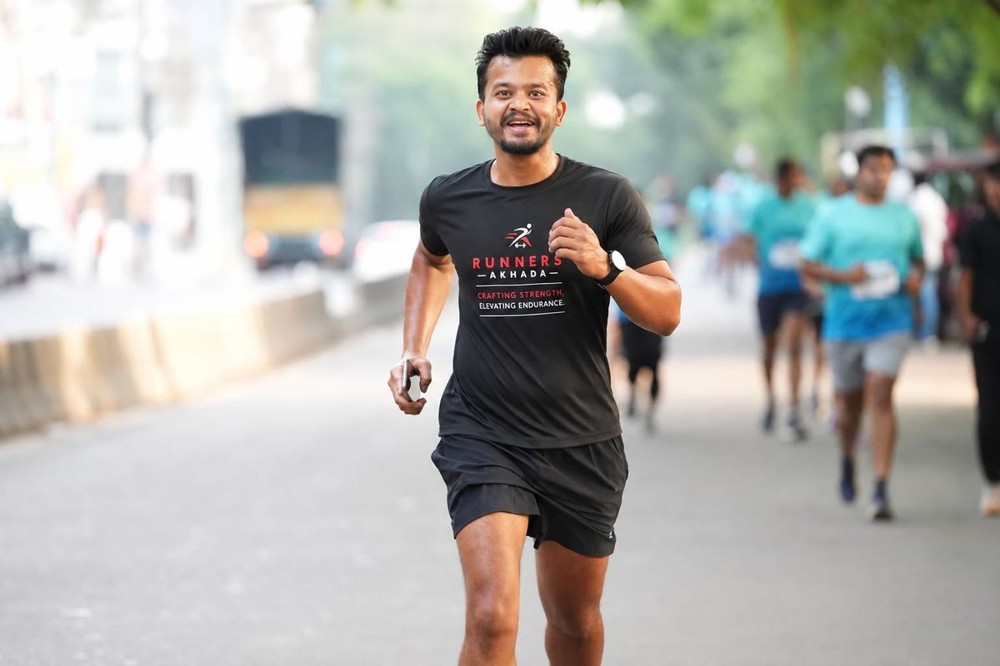
We bring a coach's eye and a community's energy to every mile you run.
Improve your speed with explosive, running-specific power work.
Flexibility work that keeps your stride efficient and pain-free.
Prevent injuries with targeted balance and core conditioning.
Build a stronger body and mind, built specifically for runners.
Every runner has a story—here are a few..
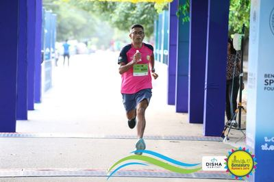
Joining Runners Akada 18 months ago transformed my running life. Under Coach Swapnesh’s thoughtful guidance and expert training, I completed my first 10K, half marathon, and full marathon—milestones I once thought were out of reach. The structured workouts, steady encouragement, and the group’s camaraderie turned my self-doubt into confidence and my small steps into big finishes. Coach Swapnesh blends discipline with empathy; he tailored my training to my pace and celebrated every hard-earned improvement. Being part of Runners Akada has taught me resilience, purpose, and the joy of shared achievement. I’m deeply grateful for this journey and excited to chase my next goal with this amazing team.
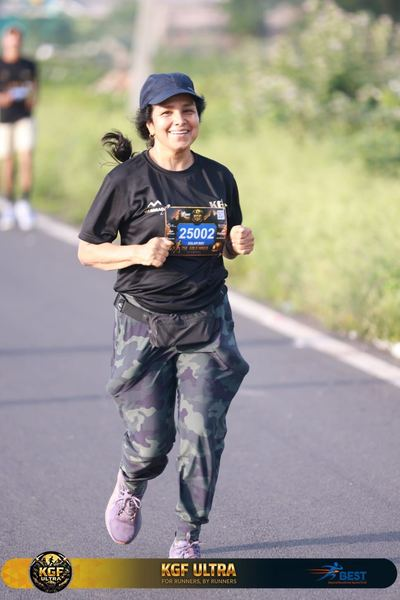
I've been training with Runners Akhada under Swapnesh since March 2025, when I started preparing for the TCS 10K. I enjoyed the coaching approach so much that I decided to continue beyond the event. The strength training, mobility workouts, and personalized running plans have significantly improved my stamina, boosted my recovery after long runs, and helped me train with greater confidence. Swapnesh is an encouraging coach who tailors training to my goals, while the camaraderie within the group makes the sessions enjoyable. The structured preparation, discipline, and positive environment at Runners Akhada have made running both rewarding and more fun for me.
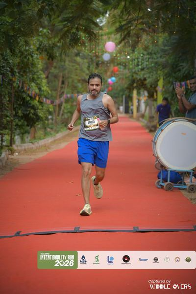
I like the approach of Coach Swapnesh towards training. He sticks to fundamentals and works on basics to improve our performance. He ensures that we are consistent, stay injury free and enjoy the process as well.
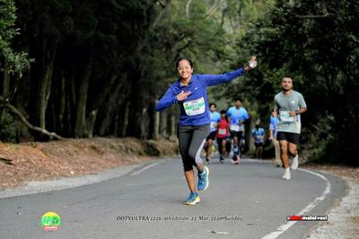
Running and trekking have always been more than hobbies to me - a way of discovering my potential and finding joy in every journey! For almost three years, Runners Akhada has been an integral part of my fitness journey & it has been one of the best decisions I've made. It's more than a running community; it's a place that has helped me become stronger, more resilient, and more confident, both on the road and in the mountains! The strength, mobility, and discipline I've built here have enriched not only my running but also my trekking adventures. A special thank you to my coach. His patience, encouragement, and unwavering belief in every runner inspire me to keep showing up and trusting the process. Thank you, "Runners Akhada", for making every step of this journey meaningful. I'm truly grateful to be a part of the RUNNERS' AKHADA family, and I look forward to many more miles, mountains, stronger strides and memories together.
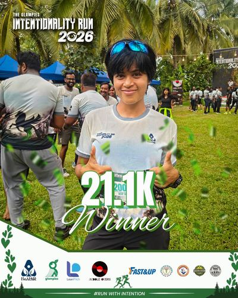
Training with Coach Swapnesh has completely changed the way I look at running. I started out as a long-distance recreational runner, but training with him made me appreciate and enjoy short- and mid-distance races too. One of the biggest things I’ve learned is that every race needs a different mindset and strategy, and that following a structured training plan really does make a huge difference. The strength sessions, consistent guidance, and discipline have helped me become a stronger and more well-rounded runner. Now, every race feels like a new challenge and another chance to become a better athlete
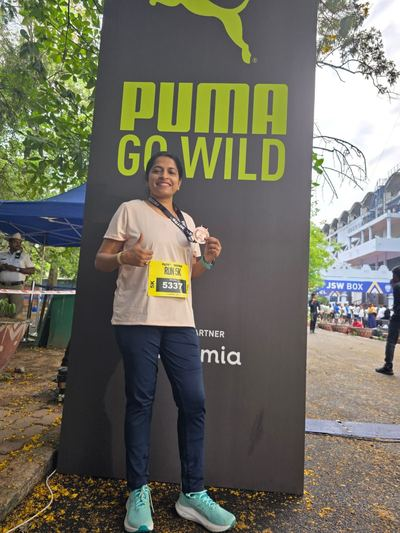
It's been more than a year since I joined Runners Akhada, and not once have I felt like leaving this amazing community. The journey has transformed me—not just physically, but also in terms of strength, confidence, and discipline.A big thank you to Coach Swapnesh, who is much more than a coach. His enthusiasm, constant support, motivation, and genuine care for every runner make this group truly special. Grateful to be part of this incredible journey, and looking forward to many more miles together!
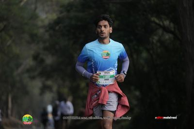
My experience with Akhada has been truly amazing. It has been an incredible journey toward becoming healthier, stronger, and more confident. I initially joined with the goal of getting fit and improving my overall health. As the training sessions progressed, I could clearly feel the improvement in my strength, endurance, and overall fitness. The training has not only enhanced my performance in various sports but has also made everyday activities easier and boosted my confidence in many aspects of life. The structured coaching and consistent guidance have also helped me achieve excellent timings in multiple races that I’ve participated in so far. It has been a wonderful journey, and I look forward to continuing it. I highly recommend Akhada to anyone who wants to build strength, improve fitness, and challenge themselves in a supportive environment.
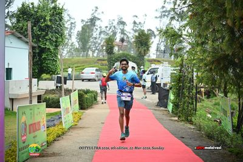
I have been training with Coach Swapnesh for the past three years, and the improvement has been tremendous. His dedication and passion for the sport are truly outstanding. He is creative with his training plans and knows how to address the individual needs and challenges of each runner.
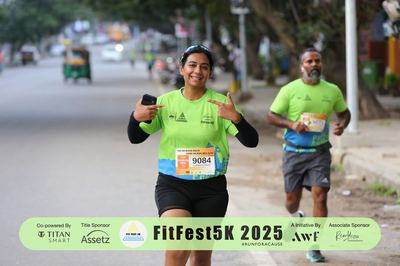
The structured training, constant motivation, and the way Swapnesh celebrates every milestone make him an exceptional coach. His guidance has helped me become a stronger and more confident runner. If you're looking for a flexible yet effective running coach, I highly recommend Swapnesh and Runners Akhada.
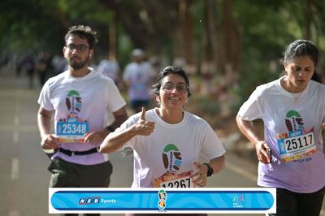
I trained with Coach Swapnesh and Runners Akhada for about a month, and it was a fantastic experience. The sessions were well-structured, motivating, and helped me become more consistent with my running. What I appreciated most was the focus on proper technique, discipline, and creating a supportive community where everyone felt encouraged. It was a great learning experience, and I'm grateful to have been a part of it.
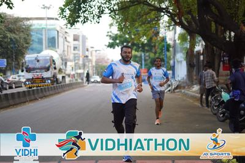
I trained with Runners Akhada for 3 months and it was a great experience. Coach Swapnesh had a way of keeping sessions fresh, always introducing new exercises and formats that made every workout genuinely fun and something to look forward to. The strength training 3 days a week combined with a structured running plan gave me a solid all-round base. What also stood out was the community, where you look forward to the workout not just for the training itself but also to see who's showing up that day, because the people make it just as enjoyable as the session.
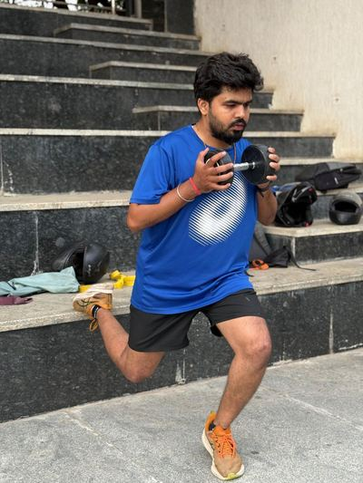
When I started my running journey in 2023 to lose weight, Coach Swapnesh was the first person in our running club to encourage and believe in me. He taught me the fundamentals—how to use Strava, how to run properly, and, most importantly, how to stay consistent. More than running, he showed me how to enjoy the journey and make fitness a part of life. We started training together in March 2023 at the BDA grounds and parks in HSR. Those sessions were full of fun, learning, and positive energy. I was his first trainee, and I will always be grateful for his selfless guidance, support, and inspiration. Thank you, Coach Swapnesh!
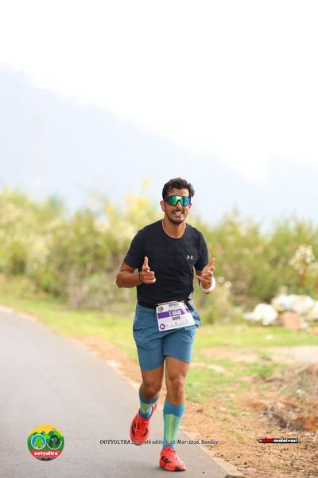
I have known Coach Swapnesh (Bhaiya) since 2024, when I had just started my running journey. Like every beginner, I had plenty of questions, misconceptions, and excitement. From day one, he guided me through what was right and what was wrong in running. More than just telling me what to do, he helped me understand the why behind every aspect of training. In 2025, I completed the Tata Mumbai Marathon Half Marathon in 1:54, but I wasn't satisfied with my performance. That's when Bhaiya stepped in and completely changed the way I approached running. He taught me how to train smart instead of just training hard. With structured plans, proper recovery, and a clear purpose behind every session, I started seeing remarkable improvements. I still remember the days when Runners Akhada was just an idea. Even before it officially started, we had countless discussions about his vision, and I was genuinely excited to be a part of it. Today, I'm proud to say that I was one of the first batch of athletes at Runners Akhada. Under his guidance, I completed the entire Procam Slam journey (2025–2026) and achieved a personal best in the half marathon, improving from 1:54 to 1:42. That transformation wasn't just because of training plans—it was because of the way he coaches. What makes Bhaiya different is that he never believes in a one-size-fits-all approach. He takes the time to understand each athlete's lifestyle, work commitments, recovery needs, strengths, weaknesses, and personal goals before designing a plan. Every schedule is thoughtfully customized, making it realistic, sustainable, and effective. Even today, I continue to seek his guidance. No matter how busy he is, I've never heard him say "no." Instead, he always comes back with new ideas, solutions, and possibilities. Most importantly, he has always believed in me, even on days when I doubted myself. For me, Runners Akhada is much more than a coaching group. It's a community that builds disciplined, confident, and stronger athletes. If you're looking for a coach who genuinely invests in your growth—not just your finish times—I couldn't recommend Coach Swapnesh and Runners Akhada more highly. Thank you, Bhaiya, for being a mentor, a coach, and someone who constantly pushes me to become a better athlete. Here's to many more milestones together!
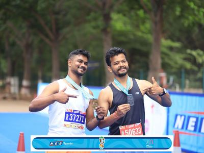
I first met Coach Swapnesh on our way to the Lonavala 50K Ultra - my very first race, where I was by far the youngest and least experienced runner. A year of training later, I can confidently say he’s the best, both personally and professionally. His structured, unique workouts have kept me running pain-free for a long time, and I can't wait to keep the streak going!
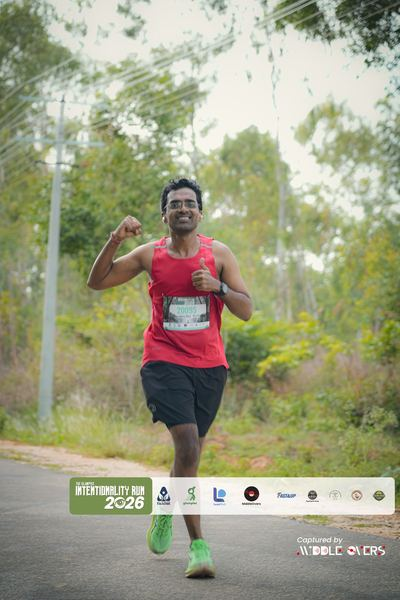
I feel truly fortunate to have a coach like you Swapnesh Bhardwaj. What makes you special is that you never treat your trainees as just athletes—you treat us like family and friends. Your dedication to each one of us, your ability to understand our individual strengths and weaknesses, and the care with which you tailor our training plans set you apart. Thank you for your constant guidance, encouragement, and belief in us. I hope to make you even prouder in the races and milestones that lie ahead.
Fill out a quick form and let's build your training plan together.
Sign Up Now